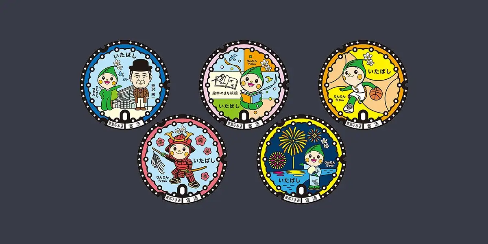

Itabashi, Tokyo: things to do, food and stays
Itabashi · Tokyo
Itabashi
Highlighted on the Tokyo map.

Sights
Dining
Shimoda Ryu
下田流

Sweets and bakery shop in Itabashi, Tokyo.
Chuka Soba Ibuki
中華ソバ 伊吹

Noodle restaurant in Itabashi, Tokyo.
China Soba Osada
支那ソバ おさだ

Noodle restaurant in Itabashi, Tokyo.
Materiel
マテリエル

Cafe in Itabashi, Tokyo.
Asahi Chonai Kai
あさひ町内会

Noodle restaurant in Itabashi, Tokyo.
Shimura Tokujuen Reservation
志村 徳寿園

Meat restaurant in Itabashi, Tokyo.
Kotobuki Seimen Yoshikawa Nishidai ekimae ten
寿製麺 よしかわ 西台駅前店

Noodle restaurant in Itabashi, Tokyo.
Kurioro Hon
クリオロ 本店

Sweets and bakery shop in Itabashi, Tokyo.
Tamashii no Chuka Soba
魂の中華そば

Noodle restaurant in Itabashi, Tokyo.
Sushi Matsumoto
鮨 まつ本

Seafood restaurant in Itabashi, Tokyo.
Shinkirow
蜃気楼

Chinese or Asian restaurant in Itabashi, Tokyo.
Chuka Men Tokoro Dotonbori
中華めん処 道頓堀

Noodle restaurant in Itabashi, Tokyo.
chuuka soba no mise minohi
中華そばの店 みのひ

Noodle restaurant in Itabashi, Tokyo.
HAJIME
らあめん 元

Noodle restaurant in Itabashi, Tokyo.
Guchoku
愚直

Noodle restaurant in Itabashi, Tokyo.
Ramen Jiro Nishidai ekimae ten
ラーメン二郎 西台駅前店

Noodle restaurant in Itabashi, Tokyo.
Ishida Ya
石田屋

Sweets and bakery shop in Itabashi, Tokyo.
Jikaseimen No11
自家製麺 No11

Noodle restaurant in Itabashi, Tokyo.
Pinocchio
ピノキオ

Cafe in Itabashi, Tokyo.
Menya Kono
麺や 河野

Noodle restaurant in Itabashi, Tokyo.
Tsukesoba Shu
つけそば 周

Noodle restaurant in Itabashi, Tokyo.
morris
モリス

Noodle restaurant in Itabashi, Tokyo.
Yo Bocho Itabashi ten
洋庖丁 板橋店

Meat restaurant in Itabashi, Tokyo.
Chuka Soba Naritaya
中華そば なりたや

Noodle restaurant in Itabashi, Tokyo.
Gedobashi Ramen
下頭橋ラーメン

Noodle restaurant in Itabashi, Tokyo.
Menya Kiraku Meijin
麺屋 喜楽明人

Noodle restaurant in Itabashi, Tokyo.
Tarumi
樽見

Izakaya or bar in Itabashi, Tokyo.
Tsukemen Tobase
つけ麺 飛耀

Noodle restaurant in Itabashi, Tokyo.
Hachidori
はちどり

Noodle restaurant in Itabashi, Tokyo.
Ramen Aioi
拉麺 アイオイ

Noodle restaurant in Itabashi, Tokyo.
INDIRA
欧風カレー インディラ

Japanese restaurant in Itabashi, Tokyo.
Yanaka
やなか

Meat restaurant in Itabashi, Tokyo.
Maruju Itabashi ekimae ten
マルジュー 板橋駅前店

Cafe in Itabashi, Tokyo.
brown onion curry factory
ブラウンオニオンカレーファクトリー

Noodle restaurant in Itabashi, Tokyo.
Yoshimura Reservation
よし邑

Seafood restaurant in Itabashi, Tokyo.
Kikoroku Narimasu
きころく 成増

Noodle restaurant in Itabashi, Tokyo.